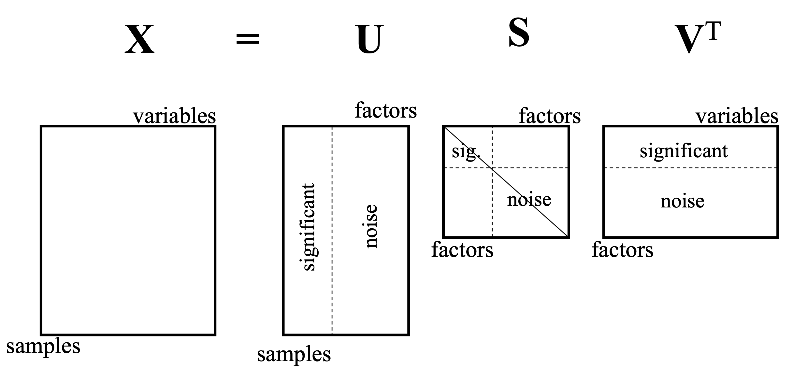

Principal component analysis (PCA). Linear dimensionality reduction using Singular Value Decomposition of the data to project it to a lower dimensional space. The input data is centered but not scaled for each feature before applying the SVD. It uses the LAPACK implementation of the full SVD or a randomized truncated SVD by the method of Halko et al. 2009, depending on the shape of the input data and the number of components to extract. It can also use the scipy.sparse.linalg ARPACK implementation of the truncated SVD.
What is a PCA?
PCA is a linear method used to reduce data dimensionality. PCA will aim to reduce the dimensionality, removing the interrelated variables, while retaining as much as possible. Keeping as much variation possible that is present in the data set.
The dimensionality reduction is achieved by transforming the data to a new set of variables, these are called the principal components (PCs). These PCs are uncorrelated, and are ordered in a way that the first couple of PCs retains the most amount of the variation that are present in the original variables.

PCA is a decorrelation method (more on this below). PCA will linearly transform the data so that covarience values are all zeros, which in tern retains the components with the largets variences. While also getting rid of the components that have small varience, therefore achieving dimensionality reduction. The Eigenvectors (more below) correspond to the different pricipal components.

Covarience Matrix
Slides 8 - 13

Eigenvectors and Eigenvalues
Covariance matrix defines both the spread (variance), and the orientation (covariance) of the data. The vector that points into the direction of the largest spread of the data is the eigenvector with the largest eigenvalue. This eigenvalue equals the
spread (variance) in this direction (defined by the corresponding eigenvector). If the covariance matrix of our data is a diagonal matrix, such that the covariances are zero, then this means that the variances must be equal to
the eigenvalues .

If the covariance matrix is not diagonal, such that the covariances are not zero. The eigenvalues still represent the variance magnitude in the direction of the largest spread of the data. The variance components of the covariance matrix still represent the variance magnitude in the direction of the x-axis and y-axis. But since the data is not axis aligned, these values are not the same anymore.

The Stages of PCA Dimensionality Reduction
There are three main steps to PCA dimensionality reduction. These are:
- PCA will list the eigenvalues in descending order
- It will then set a threshold and remove principal components that have small variances (small eigenvalues)
- The data is then projected back with reduced dimensionality.
 This table shows where the cut off area of PCs should take place.
This table shows where the cut off area of PCs should take place.
SVD and PCA
For any Matrix
- Data
, is one row per data point. The data is zero-centred.
gives coordinates of rows of
is diagagonal,
is the
largest eigenvalue.
- Rows of
are the unit length of the eigenvectors.
PCA dimensionality reduction is setting “noise” to zero to achieve reduced dimensionality.
